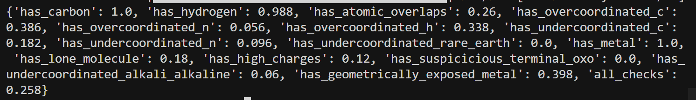
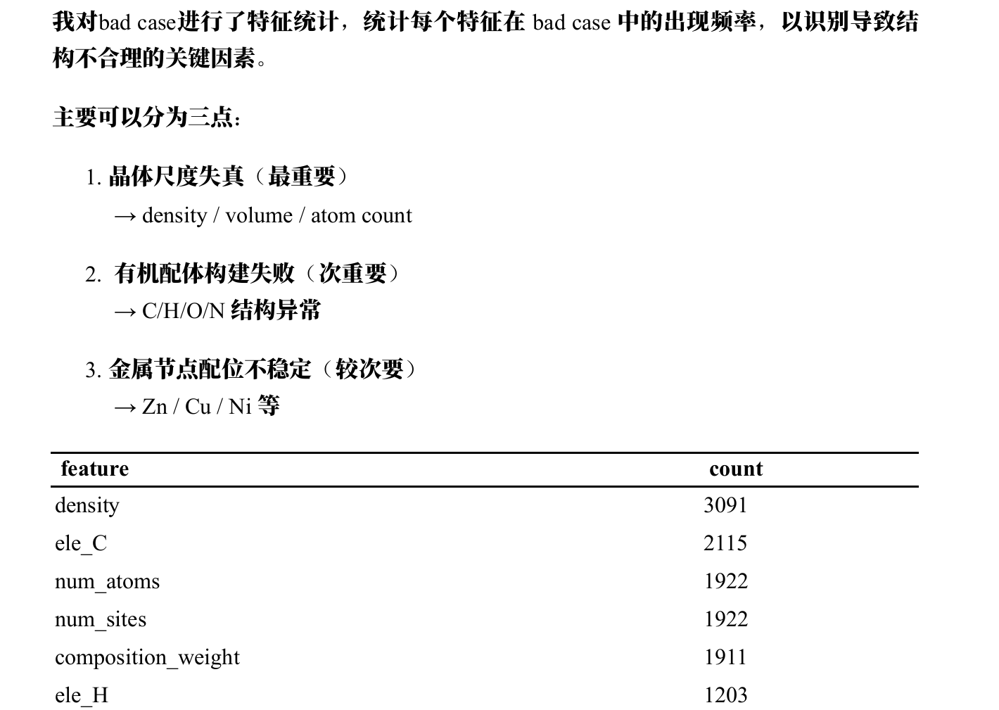
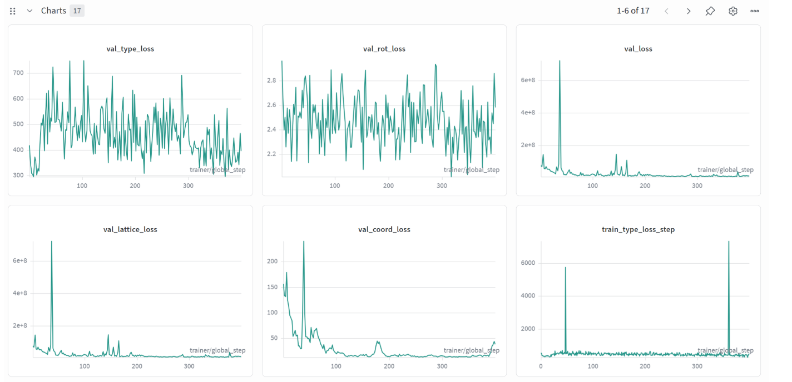
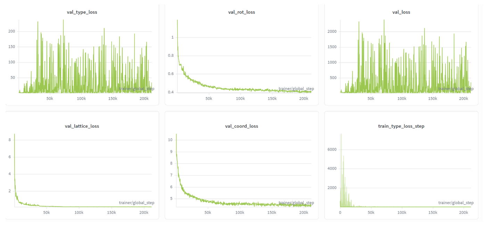

3-15-repo
上一次训练的实验结果¶
- Connect 通过率：0.942
- 充分训练之后，结果仍然没有 baseline 好。

分析 BFN 各 loss 与 MOFChecker 指标的关系¶
Loss 指标含义¶
| Loss | 形式 | 直接优化的量 | 含义 |
|---|---|---|---|
| lattice_loss | dtime4continuous_loss：按时间步加权的 MSE(x_pred, x_gt) |
晶格参数与 GT 的匹配 | 6 维：(log(a), log(b), log(c), tan(α-π/2), ...)，即晶胞边长与夹角 |
| coord_loss | dtime4circular_loss：周期坐标上的误差 |
分数坐标与 GT 的匹配 | 每个 building block 中心的分数坐标 (x,y,z) ∈ [0,1) |
| rot_loss | dtime4quat_loss：1 - (q_pred·q_gt)²（四元数） |
每个 block 的朝向与 GT 的匹配 | 旋转/取向 |
| type_loss | dtime4continuous_loss：MSE(type_pred, type_gt)（连续嵌入空间） |
block 类型嵌入与 GT 的匹配 | 当前是哪种 building block（节点/配体等） |
| vol 正则（后添加） | hinge/floor on log(V) | 惩罚「体积过小」 | 只约束晶胞体积下界，不直接约束具体键长/配位 |
总 loss = cost_lattice*lattice + cost_coord*coord + cost_rot*rot + cost_type*type（再加可选 vol 项）。
要点：
- 所有 loss 都是对 GT 的拟合（MSE 或等价的匹配），没有直接写「不要重叠」「配位数要对」等规则。
- 重叠、配位、孔隙等，只能通过学到的分布间接影响：模型学得好 → 生成结构更像训练集 → 理论上更易通过 MOFChecker。
Loss 与 MOFChecker 的假设对应关系¶
| MOFChecker 指标 | 最可能相关的 Loss / 预测 | 简要理由 |
|---|---|---|
| has_atomic_overlaps | coord_loss + lattice_loss | 重叠 = 原子太近 → 位置错或晶胞太小/扭曲；体积正则只约束总体积，不直接约束键长 |
| has_overcoordinated | coord_loss + type_loss | 配位数由「谁和谁成键」决定 → 位置 + 类型；rot 影响键角，间接影响配位判定 |
| has_lone_molecule | coord_loss + type_loss | 孤立分子 = 连通性断裂 → 哪些 block 放哪、是否连成骨架 |
| is_porous | lattice_loss + vol 正则 | 孔隙与晶胞大小、体积、形状强相关；coord 决定原子占位，也影响孔道 |
| has_carbon / has_hydrogen / has_metal | type_loss | 成分是否包含 C/H/金属 → 主要看 block 类型预测 |
| has_high_charges / suspicious_terminal_oxo / exposed_metal | type_loss + coord/rot | 化学/几何异常 → 类型与局部几何（位置+取向） |
假设小结：
- coord_loss 和 lattice_loss 很可能对 overlaps、配位、连通性、孔隙都有影响。
- type_loss 主要对成分和部分化学检查有影响。
- rot_loss 更多通过键角/几何间接影响配位和暴露金属等。
- 单独调 vol 正则 主要作用在体积/孔隙相关，对重叠/配位的直接作用有限，需要和 lattice/coord 一起看。
验证假设¶
1. 对 baseline 进行分析¶
各检查通过率（Baseline）¶
| 检查项 | 通过率 | 说明 |
|---|---|---|
| has_carbon | 1.00 | 全部含 C |
| has_metal | 1.00 | 全部含金属 |
| has_undercoordinated_rare_earth / has_suspicious_terminal_oxo | 1.00 | 无此类问题 |
| has_hydrogen | 0.99 | 约 1% 缺 H |
| has_overcoordinated_n / has_undercoordinated_alkali_alkaline | 0.98 | 配位/碱金属问题很少 |
| has_high_charges | 0.94 | 约 6% 高电荷 |
| has_atomic_overlaps | 0.91 | 约 9% 有原子重叠 |
| has_overcoordinated_h / has_undercoordinated_n | 0.85 | 约 15% H/N 配位异常 |
| has_overcoordinated_c | 0.84 | 约 16% C 配位过高 |
| has_undercoordinated_c | 0.76 | 约 24% C 配位不足 |
| has_lone_molecule | 0.75 | 约 25% 存在孤立分子（连通性差），但 connect check 通过率却是 98% |
| has_geometrically_exposed_metal | 0.65 | 约 35% 几何暴露金属 |
| all_checks | 0.31 | 仅约 31% 同时通过全部检查 |
connect_check (98%) 与 has_lone_molecule (75%) 为何不一致？¶
两者定义不同：connect_check 可能基于图连通性或阈值较松的成键判定；has_lone_molecule 可能对「孤立分子」有更严格的几何/化学判定。因此会出现 connect 通过率高而 lone_molecule 通过率较低的情况。
主要短板¶
- has_geometrically_exposed_metal (0.65)：暴露金属最多。
- has_lone_molecule (0.75)：约 ¼ 存在孤立分子，说明 3D 连通性不足。
- has_undercoordinated_c (0.76)：C 配位不足。
- has_overcoordinated_c (0.84)、has_undercoordinated_n / has_overcoordinated_h (0.85)：C/N/H 配位略差。
- has_atomic_overlaps (0.91)。
按体积分桶：has_atomic_overlaps（无重叠）通过率¶
| 体积桶 (ų) | 通过率 | 样本数 |
|---|---|---|
| 573 ~ 1527 | 1.00 | 20 |
| 1527 ~ 2310 | 0.90 | 20 |
| 2310 ~ 3090 | 0.85 | 20 |
| 3090 ~ 5232 | 1.00 | 20 |
| 5232 ~ 58840 | 0.80 | 20 |
「体积小」并没有带来更多原子重叠，反而是最大的体积桶最差，可能与晶胞过大、原子排布更散或相对位置误差更大有关。
按原子数分桶：has_lone_molecule（无孤立分子）通过率¶
| 原子数桶 | 通过率 | 样本数 |
|---|---|---|
| 26 ~ 58 | 0.76 | 21 |
| 58 ~ 74 | 0.85 | 20 |
| 74 ~ 99 | 0.74 | 19 |
| 99 ~ 135 | 0.80 | 20 |
| 135 ~ 444 | 0.60 | 20 |
原子数最多的一桶（135–444）通过率明显最低（0.60）：结构越大、block 越多，越容易出现孤立分子或连通性断裂。
2. 阅读 MOFChecker 源代码¶
| MOFChecker 指标 | 主要依赖的 loss | 说明 |
|---|---|---|
| has_atomic_overlaps | coord, lattice | 纯距离：重叠 = dist < min(cov_r) |
| has_overcoordinated | coord, type, rot | 配位数来自图；图由距离+类型建边；键角来自 rot |
| has_geometrically_exposed_metal | coord, rot | 配位锥角由配体位置+取向决定 |
| has_lone_molecule | coord, type, lattice | 连通分量是否跨 PBC，由成键图决定 |
| has_3d_connected_graph | coord, type, lattice | 同上，图连通性 |
| is_porous | lattice, coord, 体积 | 孔由晶胞与占位决定；zeo++ PLD≥2.4 |
| has_high_charges | type, coord, rot | 电荷由成分与几何间接决定 |
| has_carbon / has_hydrogen / has_metal | type | 成分 |
| has_suspicious_terminal_oxo | coord, rot, type | 局部化学环境 |
3. 消融实验设计（验证「哪个 loss 驱动哪个指标」）¶
思路：在固定数据、固定其他 cost 下，单变量放大某一 cost，训到相近步数/epoch，同一套推理+评估，看 MOFChecker 各通过率与 connect_check 的变化。
| Run | all_checks | has_atomic_overlaps | has_lone_molecule | has_geometrically_exposed_metal | has_overcoordinated_c | has_undercoordinated_c | connect_check |
|---|---|---|---|---|---|---|---|
| baseline | 0.31 | 0.91 | 0.75 | 0.65 | 0.84 | 0.76 | 0.98 |
| abl_baseline_small | 0.00 | 0.49 | 0.97 | 0.72 | 0.39 | 0.21 | 0.39 |
| abl_type_low_02_small | 0.00 | 0.65 | 0.95 | 0.80 | 0.77 | 0.51 | 0.28 |
| abl_type_15_small | 0.00 | 0.70 | 0.90 | 0.75 | 0.51 | 0.08 | 0.32 |
| abl_coord_2_small | 0.00 | 0.55 | 0.81 | 0.63 | 0.53 | 0.30 | 0.38 |
| abl_lattice_2_small | 0.01 | 0.58 | 0.87 | 0.72 | 0.56 | 0.13 | 0.34 |
| abl_rot_15_small | 0.00 | 0.57 | 0.95 | 0.74 | 0.54 | 0.21 | 0.35 |
六组消融解读¶
小规模短训下 all_checks 多为 0，仅 abl_lattice_2_small 为 0.01（1 条全过）；相对变化足以区分各 cost 的效应。
| 指标 | 最优 run |
|---|---|
| all_checks | abl_lattice_2_small |
| has_atomic_overlaps / has_undercoordinated_c | abl_type_15_small |
| has_lone_molecule | abl_baseline_small |
| has_geometrically_exposed_metal / has_overcoordinated_c / 成分 | abl_type_low_02_small |
小结：type_low_02 在暴露金属、成分、overcoordinated_c 最好；type_15 在 overlaps、undercoordinated_c 最好；lattice_2 唯一 all_checks>0。coord_2 本批中连通性与暴露金属最差，需长训或改 cost_coord 再验证。后续可试 cost_type 中间值（0.5～2）或 type_low + lattice 组合。
从消融实验得出的 Loss 与 MOFChecker 指标关系¶
根据六组消融（改单一 cost_*）与 MOFChecker/connect_check 的对应，归纳如下。与上文「假设」一致处已用「✓」标出；不一致或需进一步验证的也标出。
| Loss（调节 cost_*） | 消融中主要影响的 MOFChecker 指标 | 方向（权重↑时） | 与源码/假设是否一致 |
|---|---|---|---|
| type_loss | has_atomic_overlaps、has_undercoordinated_c、has_overcoordinated_c、has_geometrically_exposed_metal、has_carbon/hydrogen、has_lone_molecule、connect_check | type 权重大 → overlaps↑、undercoordinated_c↑、connect 略↓；权重小 → exposed_metal↑、overcoordinated_c↑、成分↑、undercoordinated_c↓ | ✓ 成分/配位与 type 对应；压 type 后 exposed_metal/overcoordinated_c 变好，与「让 coord/rot 多占梯度」一致 |
| coord_loss | has_lone_molecule、has_geometrically_exposed_metal | coord 权重↑（本批）→ lone_molecule↓、exposed_metal↓ | 与「coord 主导连通性/重叠」的假设相反，可能与小规模/步数或权重 2.0 有关，需全文或更长训再验证 |
| lattice_loss | all_checks、has_atomic_overlaps、has_undercoordinated_c | lattice 权重↑ → 唯一 all_checks>0，overlaps/undercoordinated_c 中等偏好 | ✓ 与「lattice 影响体积/重叠/孔隙」一致；对「全项通过」有边际帮助 |
| rot_loss | 各项较均衡；has_lone_molecule、has_geometrically_exposed_metal 中等 | rot 权重↑ → 连通性与暴露金属居中，无单项最差 | ✓ 与「rot 影响配位几何/键角、间接影响暴露金属」一致 |
简要结论：
- 想提 has_geometrically_exposed_metal、has_overcoordinated_c、成分：适当压低 cost_type（如 0.2）或保持中等，让 coord/rot 梯度更足。
- 想提 has_atomic_overlaps、has_undercoordinated_c：可适当提高 cost_type（如 15）或配合 lattice；注意 cost_type 过高会损 has_lone_molecule 与 connect_check。
- 想提 all_checks / 全项通过：本批消融中加大 cost_lattice（lattice_2）是唯一出现 all_checks>0 的设定，可保留或与 type 中间权重组合。
- has_lone_molecule / connect_check：本批中 baseline 与 rot_15 较好；coord_2 最差。若全文/长训下仍如此，则不宜单方面大幅提高 cost_coord，需与 type、lattice 一起调。
以上关系基于当前小规模、短训消融；全文或更长训可能部分修正。
根据实验后的改进想法¶
1. 重新平衡 type 权重¶
- 现象：默认 cost_type=10 时 val_type_loss 量级远大于 coord/rot/lattice，总 loss 被 type 主导，几何/连通性学不足。
- 做法：把 cost_type 从 10 降到 0.5～2，让 type 与 coord/lattice/rot 的加权贡献同量级。
- 预期：val_loss 更稳，has_geometrically_exposed_metal、has_overcoordinated_c、成分有机会提升。
- 实施：在现有训练命令上加
model.cost_type=1.0（或 0.5），其余 cost 不变，用全文数据训一版，对比 baseline 的 validity 与 connect_check。
2. 适当加大 lattice 权重¶
- 现象：消融里唯一 all_checks>0 的是 abl_lattice_2_small；lattice 对重叠、undercoordinated_c、全项通过都有边际帮助。
- 做法：在 type 已 rebalance 的前提下，把 cost_lattice 从 1 提到 1.2～1.5，避免过度挤压其他项。
- 预期：all_checks、has_atomic_overlaps、has_undercoordinated_c 可能略有提升。
- 实施：与上一条同跑或作为第二版，例如
model.cost_type=1.0 model.cost_lattice=1.2。
3. coord / rot 权重¶
- coord：本批消融中 cost_coord=2 使 has_lone_molecule、has_geometrically_exposed_metal 变差，全文/长训下是否反转未验证。建议先不改或只微调（如 1.0→1.2），等 type/lattice 调稳后再单独试 cost_coord。
- rot：rot_15 各项均衡，当前 cost_rot=10 可维持；若想加强配位几何，可试 cost_rot=12～15，优先级低于 type/lattice。
反思总结¶
- 半个月前的优化方向有偏差：当时发现 bad case 里密度问题最多，且 lattice loss 很大，于是从「约束晶体大小、加密度惩罚项」等角度优化，结果忽视了 MOFChecker 里的主要短板（如 has_geometrically_exposed_metal、has_lone_molecule、has_undercoordinated_c 等）。

-
缺乏经验导致误判：因为是第一次跑实验，看到 loss 曲线后不清楚什么是重点。第一次跑实验时 lattice_loss 曾到 108 量级；第二次复现时发现 val_type_loss 才是真正没有收敛、并主导 val_loss 的原因。
-
第一次实验图像：

- 第二次复现图像：
